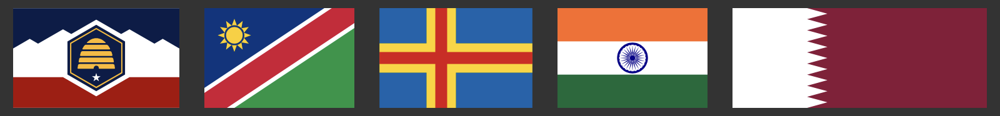

Flagrank Overhaul
12 July 2026
It's happened. It's finally happened.
After months of procrastinating, then trying to figure out how to use MySQL, then procrastinating, then going off and doing other projects (eg Paper Cuts and Trivial), I finally got around to actually fixing my very bad Flagrank server code.
What does that mean? Well, first of all, there's now a database. Changes to flag rankings are recorded instantly in an industry-standard way rather than as a JSON file saved every eight hours. JSON isn't going away, though. It should be really easy to just add more flags, since all I'll have to do to add them is add new entries to a master JSON file and then the server will plop them into the database when it boots up. Unfortunately, all these changes will be accompanied by a database reset, since I didn't feel like figuring out how to convert everything. Fortunately, the last six months of data was just lost anyways (see my last blog post), so I can't think of a better time to just destroy it all and start over.

On the backend, the changes have been just as big. Rather than having a single Javascript file do all the work, the server code now spans nine files with reasonably clearly defined responsibilities. Important information is stored in a .env file rather than kept around loose, I've deleted the superfluous package-lock.json from the Git repository, and I can now start the server with npm start rather than trying to remember the name of the file to call with node [filename]. I'm not sure if all these changes will lead to improved performance on the server, but it will definitely lead to improved performance in my brain when I'm trying to make changes and maintain everything.
As always, any contributions are welcome (see the GitHub repo). I'd also love it if you decide you're ready to become addicted to clicking flags again—we need to rebuild the dataset somehow!